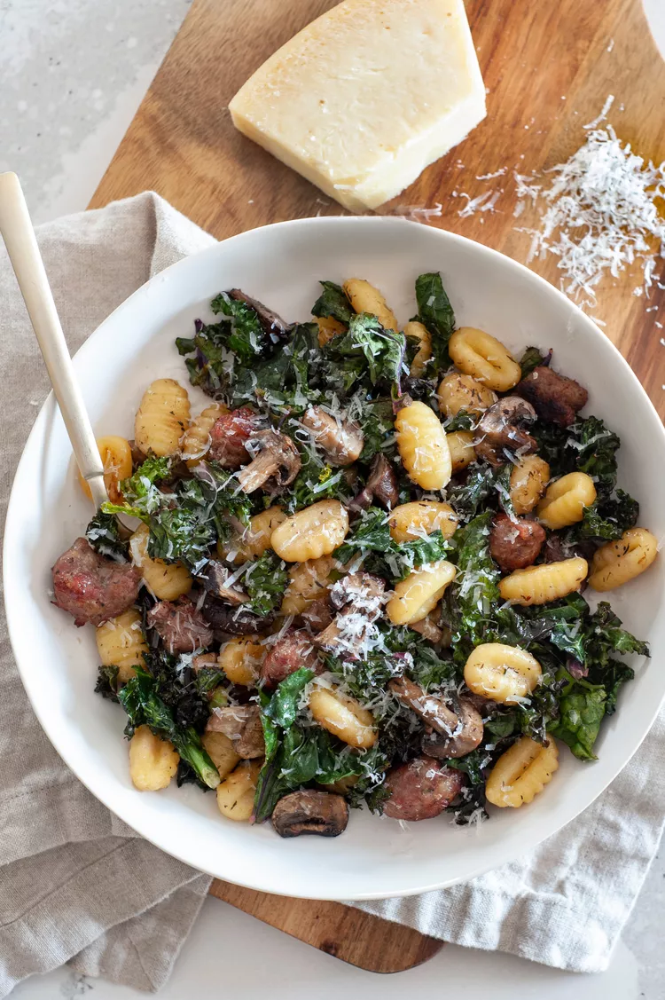

Sheet Pan Gnocchi With Mushrooms, Sausage, and Kale
As someone who cooks and writes recipes for a living, all the dirty dishes that come along with the job are a
real bummer. So when the opportunity to create a fuss-free supper with minimal dirty dishes presents itself, I’m
all in. And when it turns out to be as delicious as this sheet pan gnocchi, you better believe the recipe goes
into my regular rotation.
Making this sheet pan gnocchi is a two-step affair. You start by roasting gnocchi, mushrooms, sausage, and whole
cloves of garlic on a sheet pan. After about 30 minutes, you whisk the roasted garlic with lemon juice and olive
oil, toss it with kale, and nestle the dressed leafy greens onto the sheet pan to finish cooking.
With the pleasing combination of gnocchi, mushrooms, sausage, and kale, it’s the type of dish you’ll
want to pluck straight from the sheet pan before it even lands in a serving bowl.
Ingredients
- 8 ounces mixed mushrooms
- 1 teaspoon dried thyme
- 3/4 teaspoon kosher salt
- 16 ounces frozen gnocchi (not defrosted; or shelf-stable gnocchi)
- 3 large cloves garlic, unpeeled
- 8 ounces spicy Italian sausage
- 2 tablespoons lemon juice
- 2 tablespoons water
- 3 packed cups roughly chopped kale (about 1 bunch)
- Freshly grated Parmesan cheese, to pass at the table
Recipe instructions
- Preheat the oven to 425°F.
-
Slice the potatoes into 1/8 to 1/4-inch-thick rounds
- Put the mushrooms in a colander and rinse under the tap while rubbing off any obvious dirt. Shake off the
excess water.
- CAdd the gnocchi and garlic to the mushrooms and toss again. Spread over the surface of the pan. Use a
paring knife to slit the sausage casings down the center (or use bulk sausage). Pluck large, gumball-sized
pieces of sausage from the casings and distribute evenly over the sheet pan.
- Squeeze the soft cloves of roasted garlic out of their peels and into a large bowl. Add the lemon juice,
water, and the remaining 1 tablespoon of olive oil. Whisk to blend.
- Return the pan to the oven and bake until the kale is cooked, about 10 minutes. Spoon the gnocchi into 4
shallow bowls, add a light drizzle of olive oil to each, and serve with Parmesan cheese.
- Store leftover gnocchi in a covered container in the fridge. To reheat, add a splash of water and drizzle
of olive oil and warm in the microwave or an oil-slicked skillet over medium heat. Taste and add lemon and
Parmesan as desired.
Home